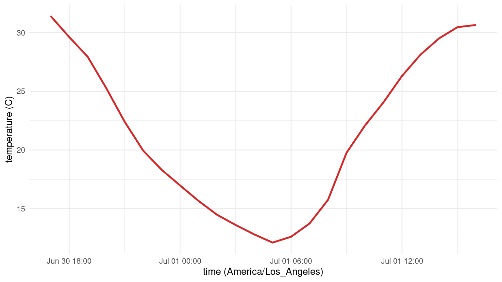

remotes::install_github("lebauerapproach/caladaptaer")Getting Started
caladaptaer provides access to downscaled CMIP6 climate projections from the Cal-Adapt Analytics Engine. This tutorial covers installation, catalog checks, and the first point time-series read.
For a broader data-access guide, see Accessing Cal-Adapt Data in R.
Installation
Requirements:
- R >= 4.1
- GDAL >= 3.4
- internet connection
- R packages:
sf,stars,dplyr,ggplot2(and their dependencies)remotes(for installation from GitHub)
Check the GDAL version before reading from the cloud-hosted Zarr stores:
sf::sf_extSoftVersion()["GDAL"]
#> GDAL
#> "3.11.5"library(caladaptaer)Fetch a time series at a point
cae_fetch_point() reads the grid and extracts data from the grid cell that is closest to the provided longitude and latitude.
The following example reads one summer day in Fresno in 2050 under SSP3-7.0:
ts <- cae_fetch_point("t2",
model = "CESM2", scenario = "ssp370",
lon = -119.77, lat = 36.75,
start_time = "2050-07-01T00:00:00",
end_time = "2050-07-01T23:00:00"
)
head(ts)
#> time value
#> 1 2050-07-01 00:00:00 304.5662
#> 2 2050-07-01 01:00:00 302.7805
#> 3 2050-07-01 02:00:00 301.1025
#> 4 2050-07-01 03:00:00 298.4392
#> 5 2050-07-01 04:00:00 295.5602
#> 6 2050-07-01 05:00:00 293.1013The result is a data.frame with time and value columns. Values for t2 are in Kelvin. Times are returned in UTC; the plot below converts the time axis to Pacific local time.
ts$temp_c <- ts$value - 273.15
ts$time_local <- as.POSIXct(
as.numeric(ts$time),
origin = "1970-01-01",
tz = "America/Los_Angeles"
)
ggplot2::ggplot(ts, ggplot2::aes(x = time_local, y = temp_c)) +
ggplot2::geom_line(linewidth = 1, color = "#D62728") +
ggplot2::labs(x = "time (America/Los_Angeles)", y = "temperature (C)") +
ggplot2::theme_minimal()
Extract many locations in one read
Use cae_fetch_points() to extract data from multiple locations in a single read. This function reads the grid from S3 once and extracts every location locally.
sites <- data.frame(
site_id = c("davis", "fresno", "sacramento"),
lon = c(-121.74, -119.77, -121.49),
lat = c(38.54, 36.75, 38.58)
)
mp <- cae_fetch_points("t2",
model = "CESM2", scenario = "ssp370",
points = sites,
start_time = "2050-07-01T00:00:00",
end_time = "2050-07-01T05:00:00"
)
#> Reading grid (1 S3 fetch for all 3 sites)
#> Extracting 3 sites
head(mp, 8)
#> site_id time value
#> 1 davis 2050-07-01 00:00:00 304.7827
#> 2 davis 2050-07-01 01:00:00 303.4674
#> 3 davis 2050-07-01 02:00:00 301.8932
#> 4 davis 2050-07-01 03:00:00 299.8713
#> 5 davis 2050-07-01 04:00:00 297.6558
#> 6 davis 2050-07-01 05:00:00 295.5995
#> 7 fresno 2050-07-01 00:00:00 304.5662
#> 8 fresno 2050-07-01 01:00:00 302.7805Where to go next
- Accessing Cal-Adapt Data in R – dataset background, catalog search, gridded fetch, point extraction, and model comparison
- WRF Meteorological Drivers – WRF to CF-standard NetCDF meteorological drivers for site-based model workflows